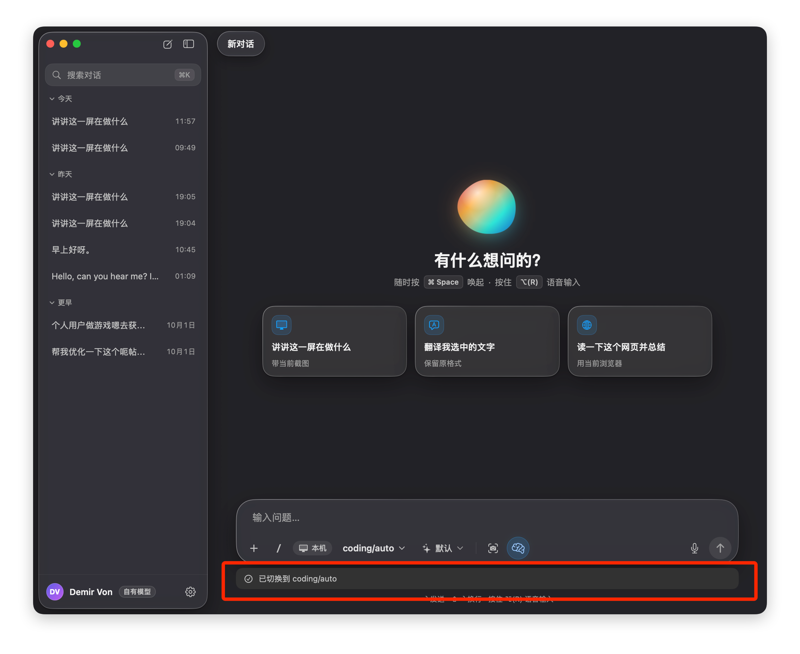

有什么想问的？
随时按 ⌘ Space 唤起 · 按住 ⌥(R) 语音输入
讲讲这一屏在做什么带当前截图
翻译我选中的文字保留原格式
读一下这个网页并总结用当前浏览器
输入问题，/ 调用命令
底部只留 22pt 外边距
问题：「已切换到 coding/auto」这类提示统一用 AskBanner 堆在输入框下方。它会把输入框往上顶，还盖住了下面那行快捷键提示（截图红框处两行文字叠在一起）。模型切换、思考强度、截图、附件失败、语音出错、对话失败等七八种信息都挤在这一处，用户分不清哪条提示对应哪个操作。
方案：输入框下方不再显示任何内容。每条信息按它说的是什么，放回它所属的位置：状态确认在对应控件上就地反馈，需要处理的问题放进卡片内部的提示条，对话级事件写进对话流，快捷键说明改到占位符和悬停提示里。聊天页输入框和快捷浮窗（launcher）共用这套规则。

AskComposer 的 VStack 就增高一截，输入框往上顶，对话内容也跟着移动。2 秒后提示消失，又跳回去。AskComposerHint（↩ 发送 · ⇧↩ 换行 · 按住 ⌥(R) 语音输入）固定在最底部，和 banner 叠在一起，两边都看不清。| 现有信息 | 来源 | 类型 | 新的位置与形态 |
|---|---|---|---|
| 已切换到 %@（模型） | commandFeedback · ask.command.modelChanged | 状态确认 | 模型按钮就地闪一下：蓝色描边 + ✓，1.6s 后淡出。不出现文字条。 |
| 思考强度：%@ | ask.command.reasoningChanged | 状态确认 | 思考强度按钮就地闪一下，同上。 |
| 已切换到本机模式 / Typeflux Cloud | ask.command.localOn/Off | 状态确认 | 「本机」按钮就地闪一下，按钮文字本身就是新状态。 |
| 已附带 / 已移除屏幕截图、选中文字、本条使用记忆 | ask.command.screenshot*/selection*/memory* | 状态确认 | 对应的图标 chip 切换开关状态时弹一下（scale 1→1.12→1），右上角出现 ✓ 角标 1.2s。 |
| 已复制上一条回答 · 已记住 | ask.command.copied/remembered | 一次性动作 | 底栏里、麦克风左边出现绿色小胶囊「✓ 已复制」，1.6s 淡出。它占用的是底栏的空白区域，卡片高度不变。 |
| 每条消息最多选 %d 个 | ask.command.tooManyChoices | 操作被拒 | 命令面板里，对应条目原地抖一下，副标题改为警告色文字。面板外不再出提示。 |
| 已取消附带截图，当前模型不支持图片识别 | screenshotNotice · ask.image.detached | 需要知道/处理 | 卡片内提示条（卡片顶部），附「换回识图模型」按钮和 ×。截图 chip 同时显示警告角标。 |
| 附件被拒 / 图片需要识图模型 | attachmentNotice | 需要知道/处理 | 卡片内提示条，紧挨附件条。被拒的附件显示为橙色描边的「幽灵」缩略图，3s 后自动移除。 |
| 语音输入出错 | voice.error | 需要知道/处理 | 麦克风按钮变红色斜杠图标，同时显示卡片内提示条（附「重试」）。悬停麦克风可看完整原因。 |
| launcher 发送错误 | model.error（launcher） | 需要处理 | 卡片内提示条，附「重试」。 |
| 已切换到支持识图的 %@ · 改回 | visionSwitch | 对话事件 | 在对话流中这条用户消息的上方，插入一行居中的系统分隔线，带「改回 X」链接。它会留在历史里，以后能回看模型是在哪一条换的。 |
| 出错 · 重试 / 已停止 · 继续处理 / 还有未完成的回复 | error · run.status · resumable | 对话事件 | 作为失败卡片附在对应回答末尾，带「重试 / 继续处理」，不再浮在输入框上方。 |
| ↩ 发送 · ⇧↩ 换行 · 按住 ⌥(R) 语音输入 | AskComposerHint | 使用说明 | 删除底部这一行。改为：占位符「输入问题，/ 调用命令」；悬停发送按钮显示 ↩ / ⇧↩；悬停麦克风显示「按住 ⌥(R)」；欢迎页已有的那行快捷键说明保留。 |
/ 命令切到 coding/auto 的那一刻：模型按钮本身变成蓝色软底和描边，名字后面加一个 ✓。1.6s 后恢复正常样式。眼睛本来就在看这个位置，不需要再读一行字。composerBottomInset），AskComposerHint 整行删除。卡片的位置和高度不再因为提示而变化。runCommand 不再调用 confirm(text)，改为 pulse(.model / .reasoning / .local / .screenshot / .selection / .memory)。底栏用 model.pulse 判断哪个控件需要高亮。NSAccessibility.post(.announcementRequested) 把原来的确认文案（如「已切换到 coding/auto」）读给 VoiceOver。现有本地化 key 全部保留，作为播报文案使用。confirm 的“新的覆盖旧的”语义一致。AskQueueEditingHeader、附件条同一层。距离卡片左右各 8pt，圆角 11，高度 34。它属于输入框本身，不会落到卡片外面。visionSwitch）记录的是「这条对话从哪一条开始换了模型」，属于对话历史，所以写成对话流中的一行系统分隔线。「改回 X」在下一条消息发出前都能点；发出后链接变成普通文字，只作记录。error、run.status == failed/cancelled、resumable）对应的是某一条回答，所以作为卡片附在那条回答末尾。「重试 / 继续处理」就在出错位置，不用再去输入框附近找。statusColumn（输入框上方的那组 banner）随之删除。这样输入框的上方和下方都不再有额外的提示。AskImageRecoveryCard 本来就是一张卡片，同样移到对应回答末尾，样式不变。selectionLoadFailed）不是某条回答的问题，改为在对话区居中显示空状态：「加载失败 · 重试」。.help 显示「按住 ⌥(R) 说话，松开插入」，内容跟随 activationHotkey 的设置实时更新（复用 AskComposerHint.refresh 的逻辑）。.help 显示「↩ 发送 · ⇧↩ 换行」。排队、停止状态沿用 AskSendControl 各自的提示文字。ask.composer.hint 这个 key 可以删除；AskMetrics.composerHintHeight 归零后，把 composerBottomInset 调整为 22。reportHeight）。改为全部放进卡片内：提示条在顶部，确认反馈在控件上。玻璃卡片下方不再有其他内容。/local，「本机」按钮闪一下表示已切换，提示条里的「重试」直接用新模式重新发送。reportHeight 的监听从 7 个 onChange 减为 1 个（当前显示的提示条 id），其余监听（commandFeedback、各类 notice）可以删除。| 就地反馈 | 描边 AskTheme.accent 1.5pt，填充 accentSoft，✓ 圆点 14pt。显示 1.2s，淡出 0.3s |
| 底栏胶囊 | 高 26，填充 successSoft（深色 #30D158 14%），文字 12 / 550。显示 1.6s |
| 卡片内提示条 | 高 ≥34，圆角 11，左右内缩 8。.warning 用 warningSoft，.danger 用 dangerSoft，.info 用 hover |
| 控件角标 | 14pt 圆点，1.5pt 卡片色描边。警告用 StudioTheme.warning，确认用 accent |
| 系统分隔线 | 11.5pt 三级灰文字，两侧是 1pt 8% 白色的线，链接用 accentText |
| 输入框底边距 | 22pt（原来是提示行 22 + 底边距 16 = 38pt） |
| 改动点 | 说明 |
|---|---|
AskComposer.body | 外层 VStack 只保留 card。5 个 AskBanner 移入 card 顶部，合并为一个 AskComposerNotice（按优先级取一条，其余计数）。 |
AskConversationModel.confirm(_:) | 改为 pulse(_ target: AskPulseTarget, announce: String)。commandFeedback: String? 换成 pulse: AskPulse?（target + 文案 + id），由底栏控件读取。 |
AskComposerHint | 删除；把快捷键文案移到麦克风和发送按钮的 .help 里。 |
statusColumn / statusArea | 删除。visionSwitch 渲染为 transcript 中的 AskSystemLine；error、失败或取消的 run、resumable、AskImageRecoveryCard 渲染在最后一条回答末尾。 |
AskBanner | 保留，用作卡片内提示条和对话流里失败卡片的基础样式，新增 .inset（卡片内）变体。 |
| 测试 | 为 pulse 的目标映射（每个 AskCommand.action 对应哪个控件）和提示条优先级选择补单元测试；用快照测试对比聊天页和 launcher 在各状态下的卡片高度，确认提示不会改变卡片底边位置。 |